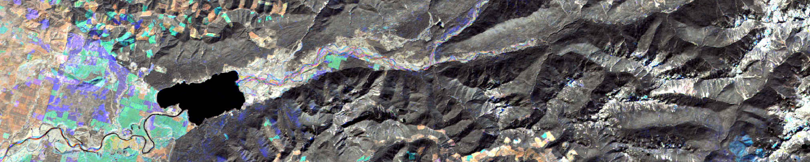

Click, scroll, and hover on page elements!

mss_dark_object_finder = function(file){
if(length(grep("radiance", file) == 1)){
info = get_metadata(file)
brightthresh = round(100*((info$b1gain*120)+info$b1bias))
} else {brightthresh = 120}
b1 = as.matrix(raster(file, 1))
goodpix = which(is.na(b1) == F & b1 <= brightthresh)
samp = matrix(nrow=100000,ncol=30)
for(k in 1:length(samp[1,])){samp[,k] = sample(length(goodpix), 100000)}
pngout = paste(substr(file,1,nchar(file)-4),"_drkobjv.png", sep="")
if(file.exists(pngout) == T){unlink(pngout)}
png(pngout,width=700, height=700)
par(mfrow=c(2,2))
thresh = c(5,5,5,5)
drkobjall = array(dim=4)
for(b in 1:4){
dn = as.matrix(raster(file, band=b))
dnsamp = dn[goodpix]
drkobj = array(dim=length(samp[1,]))
for(g in 1:length(samp[1,])){
r = dnsamp[samp[,g]]
count = table(r)
count1 = c(count[2:length(count)],0)
shift = (count1-count)
valu = as.numeric(rownames(shift))
goods = which(shift >= thresh[b])
drkobj[g] = valu[goods[1]]
}
finaldrkobj = round(mean(drkobj))
hist(dn, breaks=256, ylim=c(0,20000),
main=paste("Band",b,"dark object value =", finaldrkobj), col="black", xlab="DN")
abline(v = finaldrkobj, col = "red") #, xlim=c(0,255)
drkobjall[b] = finaldrkobj
}
dev.off()
return(drkobjall)
}